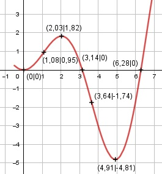

Aufgabe 176 f(x) = x * sin x x im Bogenmaß Produktregel erste Ableitung: u = x, u' = 1 v = sin x, v' = cos x f'(x) = 1 * sin x + cos x * x f'(x) = sin x + x * cos x Summen- und Produktregel zweite Ableitung: u = x, u' = 1 v = cos x, v' = -sin x f''(x) = cos x + 1 * cos x + (-sin x) * x f''(x) = 2 * cos x - x * sin x Summen- und Produktregel dritte Ableitung: u = -x, u' = -1 v = sin x, v' = cos x f'''(x) = -2 * sin x + (-1) * sin x + cos x*(-x) f'''(x) = -3 * sin x - x * cos x Definitionsbereich: 0 ≤ x ≤ 2π Wertebereich: -4,81 ≤ f(x) ≤ 1,82 (siehe Extrempunkte) Symmetrie zur y-Achse bzw. zum Punkt (0|0): f(-x) = (-x) * sin (-x) = (-x) * -sin x f(-x) = x * sin x = f(x) --> Achsensymmetrie -f(-x) = -x * sin x ≠ f(x) --> keine Punktsymmetrie Nullstellen: f(x) = 0 x * sin x = 0 |-2 x1 = 0 N1(0|0) sin x = 0 x2 = π = 3,14 ≙ 180° N2(3,14|0) x3 = 2π = 6,28 ≙ 360° N3(6,28|0) Schnittpunkt mit der y-Achse: x = 0 f(0) = 0 * sin 0 = 0 Sy(0|0) Extrempunkte: f'(x) = 0 sin x + x * cos x = 0 Wertetabelle: x 0 1 2 3 4 f'(x) 0 1,4 0,1 -2,8 -3,4 x 5 6 2π f'(x) 0,5 5,5 6,28 Nullstelle x1 = 0 Vorzeichenwechsel zwischen 2 und 3, gewählt Nullstelle x02 = 2,03 Vorzeichenwechsel zwischen 4 und 5, gewählt Nullstelle x03 = 4,87 x1 = 0, f(0) = 0 f''(0) = 2 * cos 0 - 0 * sin 0 > 0 --> Tiefpunkt (0|0) Näherungsverfahren von Newton: f(x0) x1 = x0 - ------- f'(x0) sin 2,03 + 2,03 * cos 2,03 x2 = 2,03 - ---------------------------------- 2 * cos 2,03 - 2,03 * sin 2,03 x2 = 2,03 - 0,00 = 2,03 f(2,03) = 2,03 * sin 2,03 = 1,82 sin 4,87 + 4,87 * cos 4,87 x3 = 4,87 - -------------------------------- 2 * cos 4,87 - 4,87 * sin 4,87 x3 = 4,87 - 0,04 = 4,91 f(4,91) = 4,91 * sin 4,91 = -4,81 f''(2,03) = 2 * cos 2,03 - 2,03 * sin 2,03 < 0 --> Hochpunkt (2,03|1,82) f''(4,91) = 2 * cos 4,91 - 4,91 * sin 4,91 > 0 --> Tiefpunkt (4,91|-4,81) Wendepunkte: f''(x) = 0 2 * cos x - x * sin x = 0 Wertetabelle: x 0 1 2 3 4 f''(x) 2 0,2 -2,7 -2,4 1,7 x 5 6 2π f''(x) 5,4 3,6 2 Vorzeichenwechsel zwischen 1 und 2, gewählt Nullstelle x01 = 1,07 Vorzeichenwechsel zwischen 3 und 4, gewählt Nullstelle x02 = 3,6 Näherungsverfahren von Newton: f(x0) x1 = x0 - ------- f'(x0) 2 * cos 1,07 - 1,07 * cos 1,07 x1 = 1,07 - ---------------------------------- -3 * sin 1,07 - 1,07 * cos 1,07 x1 = 1,07 - (- 0,01) = 1,08 f(1,08) = 1,08 * sin 1,08 = 0,95 2 * cos 3,6 - 3,6 * cos 3,6 x2 = 3,6 - -------------------------------- -3 * sin 3,6 - 3,6 * cos 3,6 x2 = 3,6 - (-0,04) = 3,64 f(3,64) = 3,64 * sin 3,64 = -1,74 f'''(1,08) = -3 * sin 1,08 - 1,08 * cos 1,08 ≠ 0 --> WP1(1,08|0,95) f'''(3,64) = -3 * sin 3,64 - 3,64 * cos 3,64 ≠ 0 --> WP2(3,64|-1,74) Graph:
